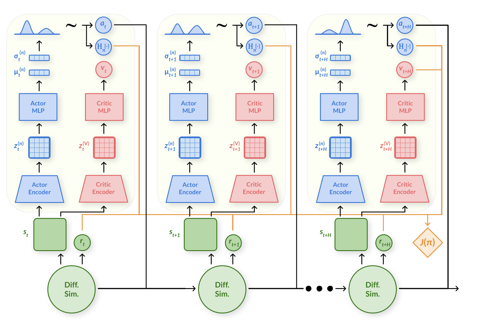

Carnegie Mellon University
TL;DR
We present a maximum entropy first-order RL algorithm, alongside
a parallel differentiable multiphysics simulation platform for RL that supports
simulating various materials beyond just rigid bodies.
Results on Rewarped tasks
Figure. Visualizations of trajectories from policies learned by SAPO in Rewarped tasks.
Soft Analytic Policy Optimization (SAPO)
We observe that existing first-order RL algorithms are prone to suboptimal convergence to local minima in
the reward landscape. We draw on the maximum entropy RL framework to formulate
Soft Analytic Policy Optimization (SAPO), a maximum entropy first-order RL algorithm. SAPO uses
first-order analytic gradients from differentiable simulation to train a
stochastic actor to maximize expected return and entropy.
Figure. Loss surface comparison between algorithms – DFlex Ant.
Figure. Loss surface comparison between algorithms – Rewarped HandFlip.

Figure. Computational graph of SAPO.
Rewarped
We introduce
Rewarped, a parallel differentiable multiphysics simulation platform that provides GPU-accelerated parallel environments for RL and enables computing batched simulation gradients efficiently.
We implement all simulation code in
NVIDIA Warp, a library for differentiable programming that converts Python code into CUDA kernels by runtime JIT compilation. We use gradient checkpointing and CUDA graphs to reduce memory requirements and compute batched simulation gradients over multiple time steps efficiently.
Results
Figure. Rewarped tasks training curves.
We compare SAPO, our proposed maximum entropy first-order RL algorithm, against baselines on a range of challenging manipulation and locomotion tasks that involve rigid and soft bodies. SAPO shows (i) more stable training across different random seeds, (ii) improved sample efficiency, and (iii) achieves higher task performance overall.
Figure. Visualizations of trajectories from different algorithms in Rewarped tasks.
BibTeX
@article{xing2024stabilizing,
title={Stabilizing Reinforcement Learning in Differentiable Multiphysics Simulation},
author={Eliot Xing and Vernon Luk and Jean Oh},
journal={International Conference on Learning Representations (ICLR)},
year={2025}
}